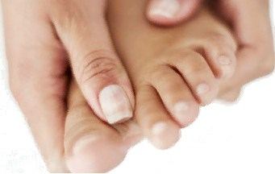

Massage der Füße und Zehen hat eine heilende Wirkung auf den ganzen Körper, weil der Fuß und Finger sind etwa 72 tausend Nervenenden - Reflexzonen, oder, wie Sie auch genannt werden, biologisch aktive Punkte, die mit den inneren Organen verbunden sind, bestimmte Auswirkungen auf die in der Lage, das Wohlbefinden des gesamten Organismus zu verbessern. Massieren Sie den entsprechenden Punkt auf dem Fuß oder den Zehen, können Sie das kranke Organ beeinflussen, Schmerzen, Beschwerden beseitigen und den Allgemeinen Zustand einer Person normalisieren.
Der Vorteil der Massage der Zehen ist, dass seine vollständige Prozedur kann unabhängig durchgeführt werden, müssen nicht den Salon besuchen oder an jemanden wenden, im Falle der Füße aus eigener Kraft kaum zu bewältigen, zumindest, wenn es um eine hochwertige Massage geht. Und es sollte so sein, denn beim gehen auf einen so kleinen Teil des Fußes, wie die Finger, hat das ganze Gewicht unseres Körpers, und oft erhöhen wir die Belastung durch unbequeme Schuhe, Probleme mit der Haltung, übergewicht. Deshalb werden wir heute mehr über die Massage der Zehen sprechen. Die richtige Durchführung eines solchen Verfahrens ermöglicht es Ihnen, Kopfschmerzen loszuwerden, die Atmung zu erleichtern, es ist diese Art von Massage in Kombination mit dem reiben der Füße ärzte empfehlen für Erkältungen.
Auf den Zehen sind bestimmte Punkte konzentriert, die in der alten Zeit in der medizinischen Praxis als sehr wichtig angesehen wurden. Ihre Wirkung auf verschiedene Körpersysteme ist unbestreitbar, durch eine bestimmte körperliche Wirkung können Sie einige Impulse übertragen, stimulieren oder Umgekehrt beruhigen das Nervensystem, Organe, Bereiche des Körpers, als Leiter oder Vermittler fungieren.
